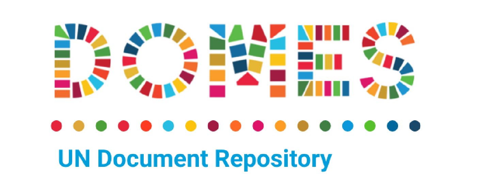
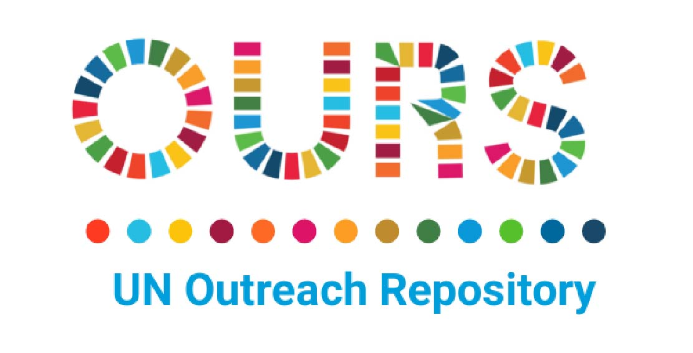

United Nations In Indonesia
Country Results Report 2021
Data-Driven Interventions
Because UNCTs rely on national governments and national statistics bodies for data, they have a responsibility to build the capacity of government agencies on data production and use, including identifying gaps in data management, analysis, and dissemination. In 2021, the UN in Indonesia supported the Government’s data capacity in relation to the national development strategy, the progress of the SDGs, and Leaving No One Behind. Through its new DOMES and OURS knowledge management tools, the UN is also making more of its own data available to support transparency, accountability, and evidence-based decision-making.
SDG Data
Most UN agencies in Indonesia are supporting the Government’s data production efforts. Means of support include the provision of metadata, strengthening survey data through testing, piloting new variables, and supporting small area estimations for key indicators. Further, UN Agencies provided technical support on data analysis, measurement, and use methodology related to the SDG Indicators.
In line with Government targets on data consolidation, the UN in Indonesia and BAPPENAS’ SDG Secretariat jointly developed an SDG dashboard, which integrates various SDG indicators and data to reduce fragmentation and discrepancies. The UN supported the development of the dashboard platform and its updates; in 2022 the UN will work towards strengthening the dashboard’s interoperability with the data and information systems of the Government’s line ministries.
Data on Disabilities in Indonesia and Leaving No One Behind
In 2021, the UN in Indonesia conducted a study in coordination with several organisations for people with disabilities that examined the status of data collection on disability. The study maps existing and potential sources of data for measuring the situation of people with disabilities in accordance with SDG indicators that are prioritized in the UNSDCF. It identifies gaps and challenges in the Government’s current disability data collection system and will inform future UN and government disability data collection efforts. Details of a broader study on who is being left behind in Indonesia, launched at the end of 2021 and set to be published in 2022, are included in the following chapter.
DOMES

In December 2021, the RCO launched a new UN in Indonesia document repository called DOMES, a one-stop-shop for the latest UN research, assessments, reports, policy briefs, and working papers. DOMES makes available to government, development partners, and the public the latest UN data and studies to support knowledge-sharing, transparency, and evidence-based policymaking. By the end of 2021, DOMES stored 246 documents from 19 UN Agencies, corresponding to all 30 UNSDCF outcomes.
OURS

The UN in Indonesia also launched the Outreach Repository (OURS) in 2021, an open-source website that details past, current, and future UNCT events. OURS provides easy access to information on the UN agencies and partners involved in any given event, the speakers in attendance, and the SDGs the event addresses. The platform is designed to encourage sharing among UN agencies and partners.